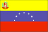
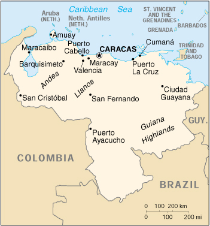

|
Venezuela |  |
| Introduction Geography People Government Economy Communications Transportation Military Transnational Issues | ||
|  | ||
| Venezuela | Introduction | Top of Page |
| Background: | Venezuela was one of the three countries that emerged from the collapse of Gran Colombia in 1830 (the others being Colombia and Ecuador). For most of the first half of the 20th century, Venezuela was ruled by generally benevolent military strongmen, who promoted the oil industry and allowed for some social reforms. Democratically elected governments have held sway since 1959. Current concerns include: drug-related conflicts along the Colombian border, increasing internal drug consumption, overdependence on the petroleum industry with its price fluctuations, and irresponsible mining operations that are endangering the rain forest and indigenous peoples. |
| Venezuela | Geography | Top of Page |
| Location: | Northern South America, bordering the Caribbean Sea and the North Atlantic Ocean, between Colombia and Guyana |
| Geographic coordinates: | 8 00 N, 66 00 W |
| Map references: | South America, Central America and the Caribbean |
| Area: |
total:
912,050 sq km
land: 882,050 sq km water: 30,000 sq km |
| Area - comparative: | slightly more than twice the size of California |
| Land boundaries: |
total:
4,993 km
border countries: Brazil 2,200 km, Colombia 2,050 km, Guyana 743 km |
| Coastline: | 2,800 km |
| Maritime claims: |
contiguous zone:
15 NM
continental shelf: 200-m depth or to the depth of exploitation exclusive economic zone: 200 NM territorial sea: 12 NM |
| Climate: | tropical; hot, humid; more moderate in highlands |
| Terrain: | Andes Mountains and Maracaibo Lowlands in northwest; central plains (llanos); Guiana Highlands in southeast |
| Elevation extremes: |
lowest point:
Caribbean Sea 0 m
highest point: Pico Bolivar (La Columna) 5,007 m |
| Natural resources: | petroleum, natural gas, iron ore, gold, bauxite, other minerals, hydropower, diamonds |
| Land use: |
arable land:
4%
permanent crops: 1% permanent pastures: 20% forests and woodland: 34% other: 41% (1993 est.) |
| Irrigated land: | 1,900 sq km (1993 est.) |
| Natural hazards: | subject to floods, rockslides, mudslides; periodic droughts |
| Environment - current issues: | sewage pollution of Lago de Valencia; oil and urban pollution of Lago de Maracaibo; deforestation; soil degradation; urban and industrial pollution, especially along the Caribbean coast; threat to the rainforest ecosystem from irresponsible mining operations |
| Environment - international agreements: |
party to:
Antarctic Treaty, Biodiversity, Climate Change, Desertification, Endangered Species, Hazardous Wastes, Marine Life Conservation, Nuclear Test Ban, Ozone Layer Protection, Ship Pollution, Tropical Timber 83, Tropical Timber 94, Wetlands
signed, but not ratified: Marine Dumping |
| Geography - note: | on major sea and air routes linking North and South America |
| Venezuela | People | Top of Page |
| Population: | 23,916,810 (July 2001 est.) |
| Age structure: |
0-14 years:
32.11% (male 3,962,517; female 3,716,880)
15-64 years: 63.17% (male 7,581,589; female 7,526,467) 65 years and over: 4.72% (male 515,687; female 613,670) (2001 est.) |
| Population growth rate: | 1.56% (2001 est.) |
| Birth rate: | 20.65 births/1,000 population (2001 est.) |
| Death rate: | 4.92 deaths/1,000 population (2001 est.) |
| Net migration rate: | -0.15 migrant(s)/1,000 population (2001 est.) |
| Sex ratio: |
at birth:
1.08 male(s)/female
under 15 years: 1.07 male(s)/female 15-64 years: 1.01 male(s)/female 65 years and over: 0.84 male(s)/female total population: 1.02 male(s)/female (2001 est.) |
| Infant mortality rate: | 25.37 deaths/1,000 live births (2001 est.) |
| Life expectancy at birth: |
total population:
73.31 years
male: 70.29 years female: 76.56 years (2001 est.) |
| Total fertility rate: | 2.46 children born/woman (2001 est.) |
| HIV/AIDS - adult prevalence rate: | 0.49% (1999 est.) |
| HIV/AIDS - people living with HIV/AIDS: | 62,000 (1999 est.) |
| HIV/AIDS - deaths: | 2,000 (1999 est.) |
| Nationality: |
noun:
Venezuelan(s)
adjective: Venezuelan |
| Ethnic groups: | Spanish, Italian, Portuguese, Arab, German, African, indigenous people |
| Religions: | nominally Roman Catholic 96%, Protestant 2%, other 2% |
| Languages: | Spanish (official), numerous indigenous dialects |
| Literacy: |
definition:
age 15 and over can read and write
total population: 91.1% male: 91.8% female: 90.3% (1995 est.) |
| Venezuela | Government | Top of Page |
| Country name: |
conventional long form:
Bolivarian Republic of Venezuela
conventional short form: Venezuela local long form: Republica Bolivariana de Venezuela local short form: Venezuela |
| Government type: | federal republic |
| Capital: | Caracas |
| Administrative divisions: |
23 states (estados, singular - estado),1 federal district* (distrito federal), and 1 federal dependency** (dependencia federal); Amazonas, Anzoategui, Apure, Aragua, Barinas, Bolivar, Carabobo, Cojedes, Delta Amacuro, Dependencias Federales**, Distrito Federal*, Falcon, Guarico, Lara, Merida, Miranda, Monagas, Nueva Esparta, Portuguesa, Sucre, Tachira, Trujillo, Vargas, Yaracuy, Zulia
note: the federal dependency consists of 11 federally controlled island groups with a total of 72 individual islands |
| Independence: | 5 July 1811 (from Spain) |
| National holiday: | Independence Day, 5 July (1811) |
| Constitution: | 30 December 1999 |
| Legal system: | based on organic laws as of July 1999; open, adversarial court system; has not accepted compulsory ICJ jurisdiction |
| Suffrage: | 18 years of age; universal |
| Executive branch: |
chief of state:
President Hugo CHAVEZ Frias (since 3 February 1999); Vice President Adina BASTIDAS Castillo; note - the president is both the chief of state and head of government
head of government: President Hugo CHAVEZ Frias (since 3 February 1999); Vice President Adina BASTIDAS Castillo; note - the president is both the chief of state and head of government cabinet: Council of Ministers appointed by the president elections: president elected by popular vote for a six-year term; election last held 30 July 2000 (next to be held NA 2006) election results: Hugo CHAVEZ Frias elected president; percent of vote - 60% note: government coalition - Patriotic Pole or Polo Patriotico consists of MVR, MAS, and PPT |
| Legislative branch: |
unicameral National Assembly or Asamblea Nacional; 165 seats; members elected by popular vote to serve five-year terms; three seats reserved for the indigenous peoples of Venezuela
elections: last held 30 July 2000 (next to be held NA 2005) election results: Pro-government: percent of vote by party - NA%; seats by party - MVR 92, MAS 6, indigenous 3, other parties 7; Opposition: percent of vote by party - NA%; seats by party - AD 33, COPEI 6, Justice First 5, other parties 13 |
| Judicial branch: | Supreme Tribunal of Justice or Tribuna Suprema de Justicia (magistrates are elected by the National Assembly for a single 12-year term) |
| Political parties and leaders: | Brave Peoples Alliance or ABP [leader NA]; Democratic Action or AD [Henry RAMOS Allup]; Fifth Republic Movement or MVR [leader Luis MIQUILENA]; Homeland for All or PPT [Pablo MEDINA]; Justice First [leader NA]; Movement Toward Socialism or MAS [Felipe MUJICA]; National Convergence or Convergencia [Dr. Rafael CALDERA Rodriguez]; Radical Cause or La Causa R [Andres VELASQUEZ]; Social Christian Party or COPEI [Jose CURIEL]; Venezuela Project or PV [Henrique SALAS Ronier] |
| Political pressure groups and leaders: | FEDECAMARAS, a conservative business group; VECINOS groups; Venezuelan Confederation of Workers or CTV (labor organization dominated by the Democratic Action) |
| International organization participation: | CAN, Caricom (observer), CCC, CDB, ECLAC, FAO, G- 3, G-11, G-15, G-19, G-24, G-77, IADB, IAEA, IBRD, ICAO, ICC, ICFTU, ICRM, IFAD, IFC, IFRCS, IHO, ILO, IMF, IMO, Intelsat, Interpol, IOC, IOM, ISO, ITU, LAES, LAIA, NAM, OAS, OPANAL, OPCW, OPEC, PCA, RG, UN, UNCTAD, UNESCO, UNHCR, UNIDO, UNIKOM, UNU, UPU, WCL, WFTU, WHO, WIPO, WMO, WToO, WTrO |
| Diplomatic representation in the US: |
chief of mission:
Ambassador Alfredo TORO Hardy
chancery: 1099 30th Street NW, Washington, DC 20007 telephone: [1] (202) 342-2214 FAX: [1] (202) 342-6820 consulate(s) general: Boston, Chicago, Houston, Miami, New Orleans, New York, San Francisco, and San Juan (Puerto Rico) |
| Diplomatic representation from the US: |
chief of mission:
Ambassador Donna J. HRINAK
embassy: Calle F con Calle Suapure, Urbanizacion Colinas de Valle Arriba, Caracas 1080 mailing address: P. O. Box 62291, Caracas 1060-A; APO AA 34037 telephone: [58] (2) 975-6411 FAX: [58] (2) 975-6710 |
| Flag description: | three equal horizontal bands of yellow (top), blue, and red with the coat of arms on the hoist side of the yellow band and an arc of seven white five-pointed stars centered in the blue band |
| Venezuela | Economy | Top of Page |
| Economy - overview: | The petroleum sector dominates the economy, accounting for roughly a third of GDP, around 80% of export earnings, and more than half of government operating revenues. Venezuelan officials estimate that GDP grew by 3.2% in 2000. A strong rebound in international oil prices fueled the recovery from the steep recession in 1999. Nevertheless, a weak nonoil sector and capital flight undercut the recovery. The bolivar is widely believed to be overvalued by as much as 50%. The government is still rebuilding after massive flooding and landslides in December 1999 caused an estimated $15 billion to $20 billion in damage. |
| GDP: | purchasing power parity - $146.2 billion (2000 est.) |
| GDP - real growth rate: | 3.2% (2000 est.) |
| GDP - per capita: | purchasing power parity - $6,200 (2000 est.) |
| GDP - composition by sector: |
agriculture:
5%
industry: 24% services: 71% (1999 est.) |
| Population below poverty line: | 67% (1997 est.) |
| Household income or consumption by percentage share: |
lowest 10%:
1.5%
highest 10%: 35.6% (1995) |
| Inflation rate (consumer prices): | 13% (2000) |
| Labor force: | 9.9 million (1999) |
| Labor force - by occupation: | services 64%, industry 23%, agriculture 13% (1997 est.) |
| Unemployment rate: | 14% (2000 est.) |
| Budget: |
revenues:
$26.4 billion
expenditures: $27 billion, including capital expenditures of $NA (2000 est.) |
| Industries: | petroleum, iron ore mining, construction materials, food processing, textiles, steel, aluminum, motor vehicle assembly |
| Industrial production growth rate: | NA |
| Electricity - production: | 81.215 billion kWh (1999) |
| Electricity - production by source: |
fossil fuel:
32.16%
hydro: 67.84% nuclear: 0% other: 0% (1999) |
| Electricity - consumption: | 75.53 billion kWh (1999) |
| Electricity - exports: | 0 kWh (1999) |
| Electricity - imports: | 0 kWh (1999) |
| Agriculture - products: | corn, sorghum, sugarcane, rice, bananas, vegetables, coffee; beef, pork, milk, eggs; fish |
| Exports: | $32.8 billion (f.o.b., 2000) |
| Exports - commodities: | petroleum, bauxite and aluminum, steel, chemicals, agricultural products, basic manufactures |
| Exports - partners: | US and Puerto Rico 57%, Colombia, Brazil, Japan, Germany, Netherlands, Italy (1999) |
| Imports: | $14.7 billion (f.o.b., 2000) |
| Imports - commodities: | raw materials, machinery and equipment, transport equipment, construction materials |
| Imports - partners: | US 53%, Japan, Colombia, Italy, Germany, France, Brazil, Canada (1999) |
| Debt - external: | $34 billion (2000) |
| Economic aid - recipient: | $35 million with more assistance likely as a result of flooding (1999) |
| Currency: | bolivar (VEB) |
| Currency code: | VEB |
| Exchange rates: | bolivares per US dollar - 699.700 (January 2001), 679.960 (2000), 605.717 (1999), 547.556 (1998), 488.635 (1997), 417.333 (1996) |
| Fiscal year: | calendar year |
| Venezuela | Communications | Top of Page |
| Telephones - main lines in use: | 2,600,000.00; however, 3,500,000 were installed (1998) |
| Telephones - mobile cellular: | 2 million (1998) |
| Telephone system: |
general assessment:
modern and expanding
domestic: domestic satellite system with 3 earth stations; recent substantial improvement in telephone service in rural areas; substantial increase in digitalization of exchanges and trunk lines; installation of a national interurban fiber-optic network capable of digital multimedia services international: 3 submarine coaxial cables; satellite earth stations - 1 Intelsat (Atlantic Ocean) and 1 PanAmSat; participating with Colombia, Ecuador, Peru, and Bolivia in the construction of an international fiber-optic network |
| Radio broadcast stations: | AM 201, FM NA (20 in Caracas), shortwave 11 (1998) |
| Radios: | 10.75 million (1997) |
| Television broadcast stations: | 66 (plus 45 repeaters) (1997) |
| Televisions: | 4.1 million (1997) |
| Internet country code: | .ve |
| Internet Service Providers (ISPs): | 16 (2000) |
| Internet users: | 400,000 (2000) |
| Venezuela | Transportation | Top of Page |
| Railways: |
total:
584 km (248 km privately owned)
standard gauge: 584 km 1.435-m gauge |
| Highways: |
total:
96,155 km
paved: 32,308 km unpaved: 63,847 km (1997 est.) |
| Waterways: |
7,100 km
note: Rio Orinoco and Lago de Maracaibo accept oceangoing vessels |
| Pipelines: | crude oil 6,370 km; petroleum products 480 km; natural gas 4,010 km |
| Ports and harbors: | Amuay, Bajo Grande, El Tablazo, La Guaira, La Salina, Maracaibo, Matanzas, Palua, Puerto Cabello, Puerto la Cruz, Puerto Ordaz, Puerto Sucre, Punta Cardon |
| Merchant marine: |
total:
36 ships (1,000 GRT or over) totaling 490,160 GRT/897,694 DWT
ships by type: bulk 7, cargo 10, liquefied gas 2, passenger/cargo 1, petroleum tanker 7, roll on/roll off 8, short-sea passenger 1 (2000 est.) |
| Airports: | 371 (2000 est.) |
| Airports - with paved runways: |
total:
124
over 3,047 m: 4 2,438 to 3,047 m: 12 1,524 to 2,437 m: 32 914 to 1,523 m: 59 under 914 m: 17 (2000 est.) |
| Airports - with unpaved runways: |
total:
247
1,524 to 2,437 m: 10 914 to 1,523 m: 97 under 914 m: 140 (2000 est.) |
| Heliports: | 1 (2000 est.) |
| Venezuela | Military | Top of Page |
| Military branches: | National Armed Forces (Fuerzas Armadas Nacionales or FAN) includes Ground Forces or Army (Fuerzas Terrestres or Ejercito), Naval Forces (Fuerzas Navales or Armada), Air Force (Fuerzas Aereas or Aviacion), Armed Forces of Cooperation or National Guard (Fuerzas Armadas de Cooperacion or Guardia Nacional) |
| Military manpower - military age: | 18 years of age |
| Military manpower - availability: | males age 15-49: 6,524,809 (2001 est.) |
| Military manpower - fit for military service: | males age 15-49: 4,701,062 (2001 est.) |
| Military manpower - reaching military age annually: | males: 246,185 (2001 est.) |
| Military expenditures - dollar figure: | $934 million (FY99) |
| Military expenditures - percent of GDP: | 0.9% (FY99) |
| Venezuela | Transnational Issues | Top of Page |
| Disputes - international: | claims all of Guyana west of the Essequibo (river); maritime boundary dispute with Colombia in the Gulf of Venezuela |
| Illicit drugs: | illicit producer of opium for the international drug trade on a small scale; however, large quantities of cocaine, heroin, and marijuana transit the country from Colombia bound for US and Europe; important money-laundering center; active eradication program primarily targeting opium; increasing signs of drug-related activities by Colombian insurgents on border |
{kind=link}
{kind=link}